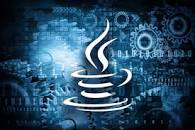
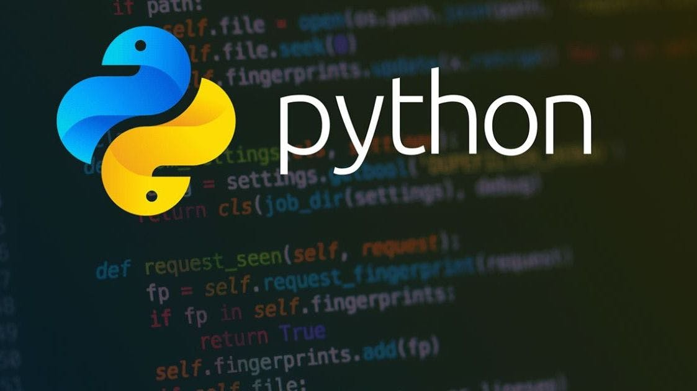

Back End
Back End
The back end refers to parts of a computer application or a program's code that allow it to
operate and that cannot be accessed by a user. Most data and operating syntax are stored
and accessed in the back end of a computer system. Typically the code is comprised of one
or more programming languages. The back end is also called the data access layer of
software or hardware and includes any functionality that needs to be accessed and
navigated to by digital means.
There are some popular languages
PYTHON JAVA
h2
JAVA

JAVA
Java is a widely used object-oriented programming language and software platform
that runs on billions of devices, including notebook computers, mobile devices,
gaming consoles, medical devices and many others. The rules and syntax of Java are
based on the C and C++ languages.
Java is a technology consisting of both a programming language and a software
platform. To create an application using Java, you need to download the Java
Development Kit (JDK), which is available for Windows, macOS, and Linux. You write
the program in the Java programming language, then a compiler turns the program
into Java bytecode—the instruction set for the Java Virtual Machine (JVM) that is a
part of the Java runtime environment (JRE). Java bytecode runs without modification
on any system that supports JVMs, allowing your Java code to be run anywhere.
Know More
PYTHON

PYTHON
Python is dynamically typed and garbage-collected. It supports multiple programming paradigms,
including structured (particularly procedural), object-oriented and functional programming. It is
often described as a "batteries included" language due to its comprehensive standard library.
Guido van Rossum began working on Python in the late 1980s as a successor to the ABC programming
language and first released it in 1991 as Python 0.9.0.[35] Python 2.0 was released in 2000. Python
3.0, released in 2008, was a major revision not completely backward-compatible with earlier
verPython 2.7.18, released in 2020, was the last release of Python 2
Know More